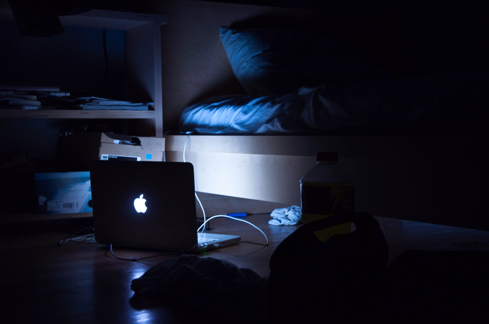
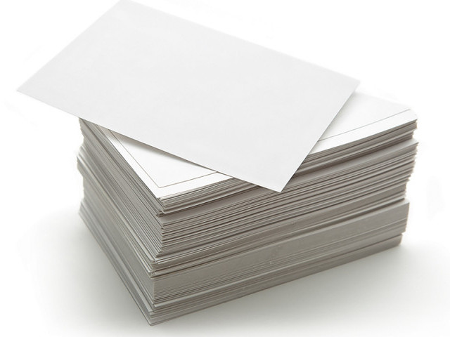
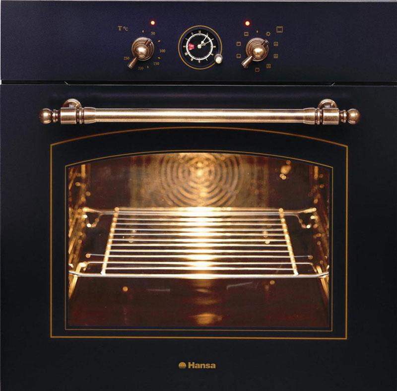
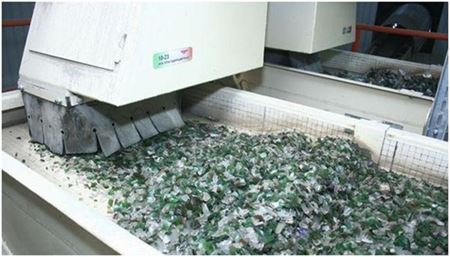
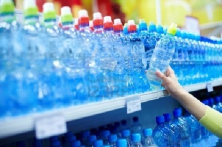

ВИМИКАЙТЕ КОМП'ЮТЕР НА НІЧ.
Тим, що ви вимкнете комп'ютер, а не залишите його в сплячому режимі, ви можете заощадити до 40 ват електроенергії на добу. Якщо ви не хочете вранці чекати завантаження комп'ютера, то чому б йому не завантажуватися поки ви вмиваєтеся? Або ж можна поставити його на автоматичне включення за пару хвилин до часу, коли ви прокидаєтеся.Те ж саме стосується й інших електричних приладів — все краще вимкнути повністю.
ОБИДНІ СТОРОНИ ПАПЕРУ.
Не варто забувати про те, що у кожного аркуша дві сторони і в більшості випадків не буде проблемою, якщо ви роздрукуєте на обох сторонах. Або ж другу сторону можна використовувати просто для особистих нотаток. Для того, щоб швидко і просто скоротити кількість використовуваного паперу удвічі, налаштуйте свій принтер на друк з обох сторін за замовчуванням.
НЕ ВКЛЮЧАЙТЕ ДУХОВКУ ЗА ЗДАЛЕГІДЬ.
Якщо ви не печете хліб і не робите якусь випічку, не підігрівайте заздалегідь духовку. Просто включайте її, коли покладете усередину їжу, яку потрібно спекти. При перевірці готовності, не відкривайте зайвий раз дверцята, подивіться через віконце — це збереже температуру всередині і заощадить енергію, необхідну для її відновлення після відкриття дверцят.
СКЛО НА ПЕРЕРОБКУ.
При переробці скла, рівень забруднення повітря зменшується на 20%, а рівень забруднення води на 50%. А от не перероблене скло може розкладатися мільйони років.
КУПУЙТЕ МЕНШЕ ВОДИ В ПЛАСТИКОВИХ ПЛЯШКАХ.
Близько 90% пластикових пляшок не переробляється, а їх розкладання займе тисячі років. Простий вихід - використовуйте одну пляшку багато разів, це допоможе навколишньому середовищу, вашому гаманцю і можливо навіть здоров'ю. Можна також використовувати фільтри для води, очищена таким чином вода навряд чи поступиться по чистоті тієї, що продається в пластикових пляшках.

Саченко Вікторія
Привіт! Мене звати Віка. Мені 17 років і я в цьому році закінчила школу. Ніколи не думала, що буду приймати участь МАН з екології. Екологія - це наука, яка вивчає відносини організмів (особин, популяцій, біоценозів і т.п.) між собою та з навколишньою неорганічною природою, загальні закони функціонування екосистем різного ієрархічного рівня, середовище мешкання живих істот (включаючи людину). Посилення впливу людини на природу надає все більшої гостроти екологічним проблемам взаємодії людини та природи, людства та біосфери.